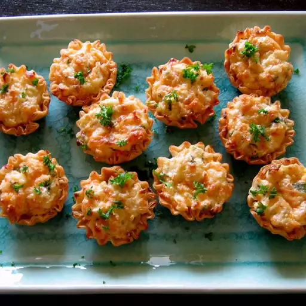

King Crab Appetizers

Description
These crab tartlets have long since been a family favorite and are requested often at holiday get togethers.
Ingredients
- Biscuit dough
- Cream cheese
- Crab meat
- Mayonnaise
- Parmesan cheese
- Cheddar cheese
- Green onion
- Worcestershire sauce
- paprika
Steps
- Preheat oven to 375 degrees F (190 degrees C). Lightly grease 12 tartlet pans.
- Divide rolls in half and press into the prepared tartlet pans. Set aside.
- In a large bowl, combine cream cheese, crab, mayonnaise, Parmesan cheese, Cheddar cheese, green onions and Worcestershire sauce. Spoon 1 teaspoon of mixture into tarts and garnish with paprika.
- Bake at 375 degrees F (190 degrees C) for 15 to 20 minutes, or until light brown. These freeze wonderfully. Just reheat before serving.
Home